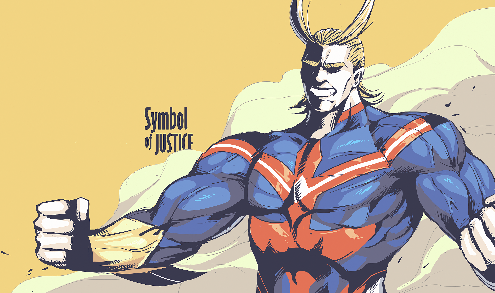
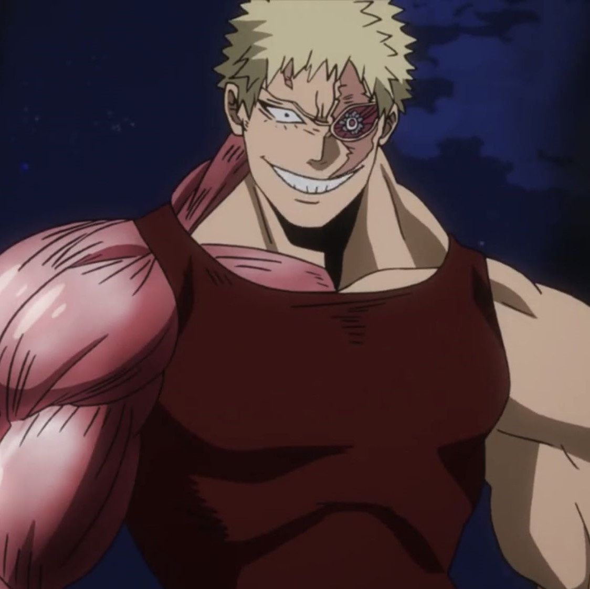
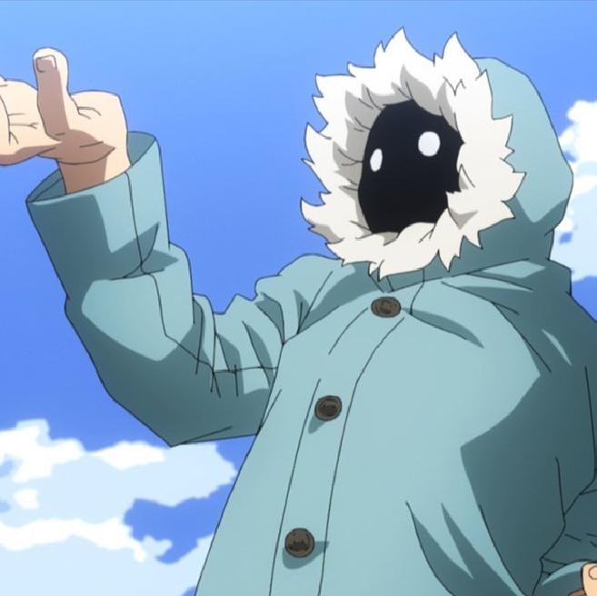

Introducción
La Liga de Villanos es un grupo de organizados de villanos que se compone de débiles y poderosos villanos y son los principales antagonistas de la serie. El creador de la liga es All For One, con Tomura Shigaraki siendo el líder interino de la liga en su lugar, mientras Kurogiri actúa como el segundo al mando de la liga. Su principal objetivo es matar a All Might, el "símbolo de la paz", por lo que también son los principales enemigos de la Academia U.A.
Más tarde se fusionaron con el Ejército de liberación de súper poderes en un sindicato llamado Frente de liberación paranormal.
Historia
El surgimiento de All Might provocó el final de la era de los villanos y el reinado de All For One. Todos sus subordinados fueron derrotados y encarcelados y el cuerpo de All For One fue destruido por All Might.
A pesar del Símbolo de la Paz y devolver a los villanos a la fama, All For One crió a Tenko Shimura en su sucesor. Tenko es el nieto del maestro de All Might, Nana Shimura. All For One sabía que preparar a Tenko en el villano Tomura Shigaraki sería la manera perfecta de golpear el corazón puro de All Might.
All For One cultivó la malicia y la villanía de Tomura, lo que lo llevó a odiar a All Might. Tomura se convierte en un niño mimado que solo desea destruir porque quiere. Kurogiri actúa como su asistente de orientación, pero Tomura lo ve como poco más que una herramienta. Gigantomachia también se cultivó como uno de los fieles seguidores de All For One en esta época.
Los originales
| Foto | Alias | Ficha personal | Habilidades |
|---|---|---|---|
| All For One | En construcción | En construcción | |
| Tomura Shigaraki | En construcción | En construcción | |
| Tomura Shigaraki | En construcción | En construcción | |
| Gigantomachia | En construcción | En construcción | |
 |
Doctor Garaki | En construcción | En construcción |
Escuadrón de acción de vanguardia
| Foto | Alias | Ficha personal | Habilidades |
|---|---|---|---|
 |
Dabi | En construcción | En construcción |
 |
Himiko Toga | En construcción | En construcción |
 |
Twice | En construcción | En construcción |
 |
Spinner | En construcción | En construcción |
| Mr. Compress | En construcción | En construcción | |
 |
Magne | En construcción | En construcción |
|  | Muscular | En construcción | En construcción |
 |
Mustard | En construcción | En construcción |
| Moonfish | En construcción | En construcción |
Asociados
| Foto | Alias | Ficha personal | Habilidades |
|---|---|---|---|
| Giran | En construcción | En construcción | |
| Re Destro | En construcción | En construcción | |
| Trumpet | En construcción | En construcción | |
 |
Skeptic | En construcción | En construcción |
|  | Geten | En construcción | En construcción |